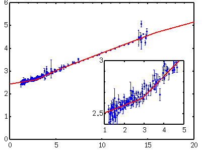
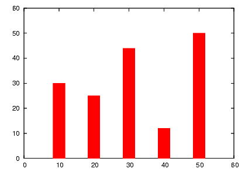
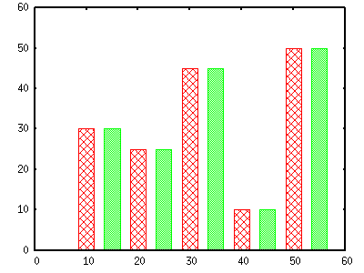

<!DOCTYPE HTML PUBLIC "-//W3C//DTD HTML 4.01 Transitional//EN">
<html lang="ja">
<head>
<title> gnuplot / plot (5) </title>
<!-- Generated 2001/ 9/15 -->
<!-- $Id: plot5.html,v 1.14 2004/12/19 09:23:44 kawano Exp $ -->
<meta http-equiv="content-type" content="text/html;charset=iso-2022-jp">
<link rel="stylesheet" href="style-new.css" type="text/css">
</head>
<body>

<table width="100%" border="0" cellpadding="0" cellspacing="0">
<tr><td bgcolor="#cccc90" width="320">
    <div align="left">
    <a href="index.html">
    
    </a></div></td>
    <td bgcolor="#cccc90">
      <div align="center"><h3> - not so Frequently Asked Questions - </h3> </div>
      <div class="update"> update 2004/12/14 </div>
    </td>
</tr>
<tr><td bgcolor="#fae8ba"></td>
    <td bgcolor="#fae8ba"><div class="navi"> 
<a href="index.html">           HOME </a> |
<a href="intro/index.html">     INTRODUCTION </a> |
<a href="general.html">         INFORMATION </a> |
<a href="gallery/index.html">   GALLERY </a> |
<a href="plot5-e.html">         ENGLISH </a>
</div></td></tr>
</table>
<hr class="topsep">


<table width="100%" border="0" cellpadding="0" cellspacing="0">
<tr><td id="menu">
 <p> not so FAQ</p>
  <ul>
    <li><a href="legend.html">      $BK^Nc(B(Legend) </a>
    <li><a href="tics.html">        $BL\@9(B(Tics) </a>
    <li><a href="label.html">       $B%i%Y%k(B(Label) </a>
    <li><a href="plot1.html">       2$B<!85%W%m%C%H(B </a>
    <ul>
      <li><a href="plot1.html#5.1">
           $B0lDj$NBg$-$5(B </a>
      <li><a href="plot1.html#5.2">
           $B:81&N>J}$N(BY$B<4(B </a>
      <li><a href="plot1.html#5.3">
           $B<4$r>C$9(B </a>
      <li><a href="plot1.html#5.4">
           $B=D2#Hf$N8GDj$5$l$??^(B </a>
      <li><a href="plot2.html#5.5">
           $B%<%m<4(B </a>
      <li><a href="plot2.html#5.6">
           $B8m:9K@$N2#@~(B </a>
      <li><a href="plot2.html#5.7">
           $BJ8;z$rBg$-$/(B</a>
      <li><a href="plot2.html#5.8">
           $B6J@~$GJd4V(B</a>
      <li><a href="plot2.html#5.9">
           $BOH@~>e%G!<%?E@$r>C$9(B </a>
      <li><a href="plot3.html#5.10">
           $BJ#?t$N%0%i%U(B </a>
      <li><a href="plot3.html#5.11">
           $B3J;R(B </a>
      <li><a href="plot4.html#5.12">
           $BJ#?t$N<4(B </a>
      <li><a href="plot4.html#5.13">
           $BG$0U$N3J;R(B </a>
      <li><a href="plot5.html#5.14">
           $B?^Cf$N?^(B </a>
      <li><a href="plot5.html#5.15">
           $BK@%0%i%U(B </a>
      <li><a href="plot6.html#5.16">
           2$B$D$N?^$rJB$Y$k!%(B</a>
      <li><a href="plot7.html#5.17">
           $B@55,3NN(<4(B </a>
      <li><a href="plot7.html#5.18">
           $B%G!<%?CM$r0u:~(B </a>
    </ul>
    <li><a href="plot3d.html">      3$B<!85%W%m%C%H(B </a>
    <li><a href="polar.html">       $B6K:BI8%W%m%C%H(B </a>
    <li><a href="parametric.html">  $BG^2pJQ?tI=<((B </a>
    <li><a href="datafile.html">    $B%G!<%?%U%!%$%k$N?tCM(B </a>
    <li><a href="postproc.html">    $B?^$rIA$$$?$=$N8e$O(B</a>
    <li><a href="misc1.html">       $B$=$NB>(B </a>
  </ul>
 <br>
</td>


<td id="content">


<h1><a name="top"> 2$B<!85%W%m%C%H$N$"$l$3$l(B ($B$=$N(B5) </a></h1>

<div align="center">
<a href="plot1.html"> 1 </a> | 
<a href="plot2.html"> 2 </a> | 
<a href="plot3.html"> 3 </a> | 
<a href="plot4.html"> 4 </a> | 
<a href="plot5.html"> 5 </a> | 
<a href="plot6.html"> 6 </a> | 
<a href="plot7.html"> 7 </a>
</div>


<h2><a name="5.14">$B?^$NCf$K?^$rIA$-$?$$(B </a></h2>

<p> $B%0%i%UCf$N6u$$$?ItJ,$K!$JL$N>.$5$J?^$rIA$$$F$_$^$7$g$&!%$h$/$"$k$N(B
$B$O!$?^$N9~$_F~$C$?ItJ,$N3HBg?^$r:n$k$b$N$G$9!%J#?t$N?^$rF1;~$KIA$/$N$G!$(B
$B$3$3$G$O(B<a href="plot3.html#5.10">multiplot</a>$B$r;H$$$^$9!%A4BN$N?^$N(B
$B%5%$%:$r(B1$B$H$7$?$H$-$K!$?^Cf$N?^$N=D2#$r(B0.5$B$K$7$?$b$N$r:n$j$^$9!%(B
multiplot$B$KF~$C$?8e!$$^$:A4BN$N?^$rIA$-$^$9!%(B</p>

<pre class="sample">
gnuplot&gt; set xrange [ 0 : 20 ]
gnuplot&gt; set yrange [ 0 : 6 ]
gnuplot&gt; set xtics 5
gnuplot&gt; set ytics 1
gnuplot&gt; set multiplot
multiplot&gt; set origin 0.0,0.0
multiplot&gt; set size 1.0,1.0
multiplot&gt; plot "file.dat" u 1:2:3 notitle with yerrorbars,\
&gt;               "file.cal" u 1:2   notitle with lines
</pre>

<p> $B?^$N86E@$r6u$$$?ItJ,(B(0.45,0.1)$B$K0\F0$7$?8e!$=L>.$7$?%0%i%U$rIA$-$^$9!%(B
     X$B$H(BY$B$N%l%s%8$O!$3HBg$7$?$$ItJ,$r;XDj$7$^$9!%3HBgAk$K%W%m%C%H$9$k$N(B
     $B$O!$%l%s%8$,0c$&0J30$O>e$NA4BN$N$b$N$HF1$8$G$9$N$G!$(B<tt>replot</tt>
     $B$r;H$&$3$H$,$G$-$^$9!%(B</p>

<pre class="sample">
multiplot&gt; set origin 0.45,0.1
multiplot&gt; set size 0.5,0.5
multiplot&gt; set xrange [ 1 : 5 ]
multiplot&gt; set yrange [ 2.4 : 3.0 ]
multiplot&gt; set ytics 0.5
multiplot&gt; replot
multiplot&gt; set nomultiplot
gnuplot&gt;
</pre>


<p> X$B$N>.$5$$ItJ,$,3HBg$5$l$F8+$d$9$/$J$C$F$$$^$;$s$+!%$3$3$G$O!$3HBg(B
$BAk$N0LCV$r$&$^$/@_Dj$7$F!$N>J}$N?^$,=E$J$i$J$$$h$&$K$7$F$$$^$9$,!$A4BN(B
$B?^Cf$N@~$dE@$,3HBg?^$NCf$KF~$C$F$7$^$&$H!$N><T$O=E$J$C$FI=<($5$l$F$7$^(B
$B$$$^$9!%(Bgnuplot$B$G!$$3$N$h$&$JItJ,$r>C$9$3$H$O$G$-$^$;$s!%(B</p>

<p> $B<4L>$rF~$l$k>l9g$OA4BN$N?^$@$1$K$7$F$*$-!$>.$5$$J}$N?^$K$OIU$1$J$$$[(B
     $B$&$,NI$$$G$7$g$&!%$^$?!$A4BN$r=L>.$9$k(BEPS$B$r:n$k>l9g$O!$A4BN$NBg$-$5(B
     $B$r7h$a$k(B<tt>set size </tt>$B$O(B multiplot$B%b!<%I$KF~$kA0$KDj5A$7$J$$$H(B
     $B$$$1$^$;$s!%(Bmultiplot$B$KF~$C$?8e$G%5%$%:$rDj5A$7$F$b!$(BPostscript$B%U%!(B
     $B%$%k$K=q$-9~$^$l$k(BBoundingBox$B$O2hLLA4BN$K$J$C$F$7$^$$$^$9!%40@.IJ$,(B
     <a href="gallery/nup.html">$B$W$m$C$H$.$c$i$j$#(B</a> $B$K$"$j$^$9$N$G;2(B
     $B9M$K$7$F$/$@$5$$!%(B</p>


<div class="top"><a href="plot5.html#top"></a></div>
<h2><a name="5.15"> $B4JC1$JK@%0%i%U!%(B</a></h2>

<p> <a href="intro/style.html#boxes">$B%9%?%$%k0lMw(B</a>$B$K$"$k$h$&$K!$(B
gnuplot$B$,IA$/K@%0%i%U(B <tt> with boxes </tt> $B$OCf6u$N6k7A$K$J$j$^$9!%Fb(B
$BIt$NEI$j$D$V$7$O(Bver.3.6$B0JA0$N(Bgnuplot$B$O$G$-$^$;$s$,!$(Bver.3.8$B$+$i2DG=$K(B
$B$J$j$^$7$?!%(B</p>

<p> Postscript$B$K=PNO$9$k$J$i!$Hs>o$KB@$$@~$r;H$C$F(B
<tt> with impluses</tt>$B$GIA$/$N$,4JC1$G$9!%2<$NNc$G$O!$(B1$BHV$N@~<o$NI}$r(B50$BG\$K(B
$B$7$F$$$^$9!%(B</p>

<pre class="sample">
gnuplot&gt; set term postscript eps enhanced color
gnuplot&gt; set linestyle 1 lt 1 lw 50
gnuplot&gt; # for gnuplot ver.4
gnuplot&gt; # set style line 1 lt 1 lw 50
gnuplot&gt; plot "test.dat" using 1:2 with imp ls 1
</pre>

<div align="center">

</div>

<br clear="all">
<div class="top"><a href="plot5.html#top"></a></div>

<p class="newver"> [ver.4] ONLY ! </p>

<p> Ver.4$B0J9_$G$O!$(Bbox style$B$G$N6k7A$rEI$j$D$V$9%*%W%7%g%s$,DI2C$5$l$F$$(B
$B$^$9!%(B<tt> with boxes </tt> $B$K(B <tt> fs [pattern | solid]
</tt>(fillstyle)$B$N%*%W%7%g%s$rIU$1$F:n2h$7$^$9!%(B<tt> set style fill
</tt>$B$rMQ$$$F!$EI$j$D$V$9%Q%?!<%s$rJL$K@_Dj$9$k$3$H$b$G$-$^$9!%(B</p>

<p> <tt> with boxes fs pattern </tt> $B$N>l9g$O!$;HMQ$9$k%Q%?!<%s$rHV9f$G(B
$B;XDj$7$^$9!%(B <tt> solid </tt> $B$N>l9g$O!$(B0$B$+$i(B1$B$^$G$NEI$j$D$V$7$NG;$5$r(B
$B;XDj$7$^$9!%(B</p>

<p> $B2<$NNc$G$O!$K@$NI}$O(B3$B$H$7!$$3$l$r(B(3)$B$GM?$($F$$$^$9!%(B</p>


<pre class="sample">
gnuplot&gt; plot "test.dat" usi 1:2:(3)      w boxes fs pattern 1,\
gnuplot&gt;      "test.dat" usi ($1+5):2:(3) w boxes fs solid 0.7
</pre>


<div align="center">

</div>

<div class="top"><a href="plot5.html#top"></a></div>
</td></tr></table>
<hr class="topsep">


</body>
</html>

